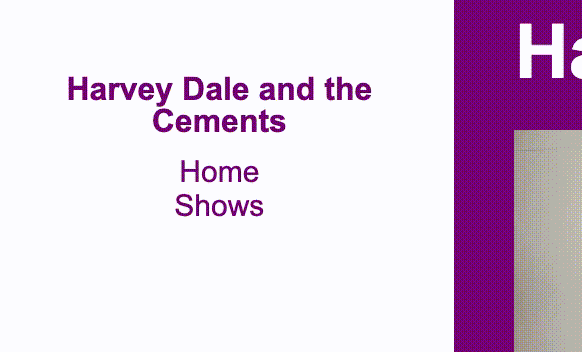
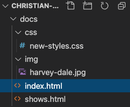

16 Refactoring our Sass
16.1 Overview and goals for this lesson
We are starting with a project template that is a two-page website for a band. It has been coded rather simply with regular, vanilla CSS. It works just fine, but as sites grow with more code, having “Sassy CSS” helps with maintainability. So, our goals for this project assignment are to:
- Understand how to manage a Node-based project:
- Where different types of source files are stored/edited and where the processed files are sent.
- Learn how Sass works by refactoring the project to use SCSS. As part of this we will:
- Improve readability of our styles through nesting.
- Use variables for increase flexibility of our styles.
- Rewrite style rules for efficiency and reusability.
- We’ll write new style rules in the Sassy way.
If you don’t already have your project open in VS Code, go ahead and open it. Run $ gulp dev in your terminal to start the development environment.
When the browser starts up, you’ll have a working multi-page website that uses traditional CSS. We are going to improve this code – or “refactor” it, as developers call it. It is a very common practice to go through old code and make it mo betta.
16.2 CSS is SCSS
This first thing to know is any valid CSS is also valid SCSS. As such, we’ll use our traditional CSS to seed our new SCSS setup.
- Copy the contents of
src/scss/old-styles.cssand paste it intosrc/scss/new-styles.scss. Once you do, you might see your terminal kick off the sass task to compile the file. - Now, in both our html files –
src/html/index.htmlandsrc/html/shows.html– you’ll see a style<link>tag that references theold-styles.cssfile. Change that to point to thecss/new-styles.css. Once you save, you’ll again see your browser refresh, but you should not see any difference in the page because our new SCSS is the same as the old, for now. Make sure you change both the index and shows files.
You might have noticed another style link going to a reset css file. We’ll deal with that in a minute.
16.3 Variables
One of the most useful features of Sass is to define variables for certain CSS values. Once you start using the Sass variables in your code, you can then change the definition of the variable in one place instead of many throughout the code base. This makes it easy to support or change themes and make wholesale changes throughout your website.
You create variable names with a preceding dollar sign and then define its value like a CSS rule. When you want to use that variable’s value, use that variable name (with the $) as the CSS rule. As a matter of convention, we set all the variables at the top of our CSS files so they can be found easily.
Here is an example:
// set the variable
$dark-border: 3px solid black;
// use the variable
.bigbox {
border: $dark-border;
}
blockquote {
// using the variable again
border-left: $dark-border;
padding-left: 20px;
}Now, if we wanted to change our dark borders from 3px black lines to 5px grey lines, we would do it ONCE when we set the $dark-border variable at the top of the file, and it would change the value throughout the site.
16.3.1 Variables exercise
There are two colors defined in our styles for our Harvey Dale and the Cements band website. Let’s Sassify them.
- Create two new variables at the top of your
src/scss/new-styles.scssfile called$primary-colorand$secondary-colorand define their values from what is currently in the CSS. - In your CSS rules, replace the color values with the new variable names.
- Save and check your page. There should be no difference.
- Change your
$primary-colorvariable value to a new color, like “red”, and see if what happens.
You should see your background color change on both the “home” page and the “shows” page. Be sure to check both of them.
16.3.1.1 Troubleshooting
If you don’t see a change, there are a couple of things to check:
- Make sure that your
gulp devtask is running in your Terminal so your Sass is getting compiled. If that is crashed with an error, you might try to Control-c in your Terminal to clear it.- You can try
gulp devagain, but you probably have to fix the error first. Read the error output for clues and line number references. Also look in your VS Codenew-styles.cssfiles for red error indicators that say something is wrong codes.
- You can try
- If Sass is still compiling but you still don’t see a change, make sure your
index.htmlandshows.htmlfiles are pointing to the correctnew-styles.cssfile and that those pages have been saved. - Unlikelyy to help, bu you can try holding down your Shift key while also refreshing your browser to clear the browser cache for that page.
16.4 Nesting
HTML code often has a clearly-nested hierarchy, where items like headlines are a child of the parent div they are inside.
CSS doesn’t have the same hierarchy. If we want to target a style to an <h3> that is inside of a <div> with a specific id, we have to specify both the div id and the headline in our rule. Perhaps not a big deal for one headline, but wasteful when you want to target a bunch of different items inside that div.
Sass allows us to write this as a visual hierarchy that is both easier to understand and often (but not always) in fewer lines of code.
While this is useful, we do need to be careful not to nest too much (three levels?) or our CSS will end up over-qualified and bloated. In addition, we don’t want to completely mimic our html hierarchy because then small changes in the HTML might break our styles.
Here is an example of traditional CSS where the styles for the ul and li tags will only be applied if they are inside a <nav> element.
nav ul {
margin: 0;
padding: 0;
list-style: none;
}
nav li {
display: inline-block;
}Here is an example of how you would write this in SCSS using hierarchy:
nav {
ul {
margin: 0;
padding: 0;
list-style: none;
}
li {
display: inline-block;
}
}Written in our Sassy way, we can immediately understand that the ul and li rules apply only to the nav element. It’s easier to understand and maintain.
16.4.1 Nesting exercise
Open your index.html file and look at the structure of our HTML. We can see there is a <div class="container"> that is the parent to all of what is contained in the body. There are two other div elements, <div class="nav"> and <div class="content"> that are nested inside the container.
If you look through the CSS you copied into new-styles.scss, you’ll see there are a number of rules that include the .content class. This is an opportunity to nest this series of rules. Let’s refactor our SCSS to reflect this nesting so it is more understandable.
We’ll combine the first two, and then you can do the rest on your own. We are starting with this:
.content {
width: 85%;
min-height: 750px;
min-width: 600px;
background-color: $primary-color;
}
.content ul {
padding-left: 30px;
}We want to the .content ul rule to be nested inside the .content rule above it, after the rules that are already there. When we do that refactor, we need to remove what would be an extra .content selector before the ul.
- Edit your .scss file to nest
.content ulinside the.contentrule. It should look like this, including indentation:
.content {
width: 85%;
min-height: 750px;
min-width: 600px;
background-color: $primary-color;
ul {
padding-left: 30px;
}
}16.4.2 On your own
- After you making the change above, make sure the styles are still building correctly and nothing broke on your page.
- Refactor the rest of the
.contentrules to fit like we did the one above. - Again, make sure nothing is broken on the page display.
16.4.3 Any children rule
Let’s pause and reflect. Do you notice any value that repeats itself over and over again inside of .content? If you look closely you will see that padding-left: 30px is an attribute of every direct child of .content. In some cases it is the only rule for that style.
This rule was added so that all the items inside <div class="content"> would have some space between the nav block and the content. It’s not a particularly great way to handle this as you have to create a new rule for every possible element you might add into the content div on your page.
There’s a shorthand CSS selector for applying a property to all “child” elements, the > * {rule;}. Using this, we can set the padding rule to be applied to anything inside the .content div. Let’s use this to set padding and clean up all the extra rules that do the same thing.
Inside the
.contentrule, before the other nested rules, add this one. Make sure it is indented properly like other nested rules:> * { padding-left: 30px; }Now that you’ve done this you can remove all the other
padding-left: 30px;everywhere else. In some cases, you no longer even need the style at all for that element because the padding was the only rule.
16.5 Partials
You may have noticed when we started this project that there was a separate reset.css file like we had in our CSS lesson, and that both are included in the <head> of our HTML files. It’s generally poor practice to make multiple links to multiple files if you can avoid it. It takes time (though milliseconds) each time you have to retrieve a new file from a server. It’s best to bundle all your CSS together in one file to the browser doesn’t have to make multiple trips.
That’s great, but that can make for some really long CSS files that are hard to manage. Sass allows for a concept called partials that allow us to break out SCSS files into smaller chunks to we can better organize it. Many developers will break up their code based on the part of the page or the function the code supports.
Sass partial filenames should start with an underscore, like _nav.scss, so Sass can know that it will be “used” and not create a new compiled .css file.
16.5.1 Making the reset a partial
Together, we’ll modify the reset.css file and make it into a Sass partial.
We first need to change the name of the file so it starts with an underscore _ and ends in .scss so Sass can deal with it properly.
In your Explorer list find the file
reset.cssfile (it’s insrc/scss/) and rename it to_reset.scss.Go into the
new-styles.scssfile and at the top of the file but below your color variables, add the following:@import 'reset';Note that you don’t need to include the underscore or the file extension to the import call, as Sass will understand that automatically. (Though I don’t think it would break if you had them.)
Now go into both
index.htmlandshows.htmland remove the line of code that links to the old reset file.Make sure that your Gulp process is still working and your page is still working OK.
16.5.2 Partials practice
OK, so that you’ve seen how that works, I want you to create three new partials to divide your scss files: base, nav and content.
Inside the
/src/scssfolder, create a three new files:_base.scss_nav.scss_content.scss
We’ll leave our variables in
new-styles.scss, so they continue to apply to all the other code that follows.Go into
new-styles.scssand copy/cut all the lines generic rules that apply to the whole site … i.e. those not in the.navand.content. Add those lines to_base.scss.Go into
new-styles.scssand copy/cut all the lines for the.navcalls and add them to_nav.scss.Do the same for all the
.contentcalls into the_content.scssfile.Lastly, after your variable rules, add @import calls into
new-styles.scssfor our new partials AFTER the import for reset.@import 'base';
Remember that you don’t need to add the underscore or the .scss with these import designations, as Sass assumes them already.
Make sure these @imports come AFTER your variables, because this CSS still cascades, and the variables are used by the imports.
16.6 Style-writing practice
Now I’d like you to write some new SCSS to modify and/or fix a couple of things in our project.
I find that sometimes when I make style changes, especially to font sizes, they are not reflected when the page refreshes because the browser has “cached” the style file. Before driving yourself too crazy if a change isn’t happening, try holding down the shift key and refresh your browser. This forces the browser to reload linked files instead of caching them.
16.6.1 Text sizes
- Increase the size of all paragraphs and lists that are in the content div without affecting the size of items in the nav div. (Headlines should remain larger than
1rem.) - Also set a
line-heightrule within those same paragraphs to give some space between lines of text. - Add a comment in the sass file above the lines where you make these changes so I can find them!
16.6.3 Set bullet style for shows
The list of shows on the shows.html is hard to read. Make some changes to make it look better:
- Make the list of shows a bulleted list. (Style of your choice.)
- Make sure the bullets line up vertically with the video on the page.
Make sure you don’t add bullets back to the list items in the nav!
16.6.4 Set anchor underlines
Add styles that will give navigation links the primary color and behave like those in the body, where the underline only shows on hover.

Selecting these are a bit tricky. link, hover, visited are all separate properties and each one needs to be specified individually with a text-decoration property, like this:
a:hover {
text-decoration: underline;
}You’ll want to set these styles in the _nav.scss file.
- Set both the link and visited values to have the primary color, and the text-decoration to none.
- Set hover color to the primary color, and text-decoration to underline.
Remember, you want these styles to only apply in the navigation.
16.6.5 Content link colors
In the “content” parts of pages, I want hrefs to have the underline, and that the color of the links be something other than the browser default blue/purple color. Choose a color that makes sense given the primary color you use (which might be your secondary color).
16.7 File names and paths
This is the first project where we have had multiple pages, so let’s talk a bit about file names and paths between files.
You might have noticed that when we ran gulp dev and our browser launched it displayed the page called index.html. That is a special file name in the web world … it is the HTML page that will display from a directory if no other path is specified. So, anytime you go to a website that where the url ends at the domain or a /, like statesman.com/, then what you are seeing is the index.html page. (OK, it can be more complicated than that, but generally true.)
So, the index is the “home page” of a directory.
Take a look at the docs folder in your VS Code Explorer.

It is this folder where all our processed pages are sent to … it is our “real” website, even though we edit from the src folder. It is the “root” of our site and where our index.html page lives. Everything else is relative to that folder. When we launch our environment, it goes to http://localhost:3000/ but it displays the index.html page. Once you click through to the shows.html page, it url changes to http://localhost:3000/shows.html. If you click on the Home link it takes you to http://localhost:3000/index.html, which is the same exact page as http://localhost:3000/.
If you look inside index.html in the nav element you’ll see this:
<li><a href="shows.html">Shows</a></li>This link is going to the shows.html page, which is right next to index.html. There are no folders or anything that the path has to traverse … it just names the file because they are adjacent to each other in the file structure.
But look a little further into the page and you’ll see this:
<img src="img/harvey-dale.jpg"/>If you look at our docs folder structure above, you’ll see that the harvey-dale.jpg photo is inside a folder called img. Because of this our src= path has to include that folder name in the path. This path is relative to where the index.html page lives.
We have img/ and css/ folders. The folders are there just for organization … those files could technically live anywhere within docs if paths are written correctly, but that would be messy. Again, it’s pretty common to store files of the same time like images the same directory.
It’s just important to remember the relative path between files in src/ should be the same as in docs/.
16.8 Push to Github
If you haven’t already, you should run git init, git add . and git commit -m "message" for this repo, and then create your Github repo and connect them.
Push all your changes to this point to Github.